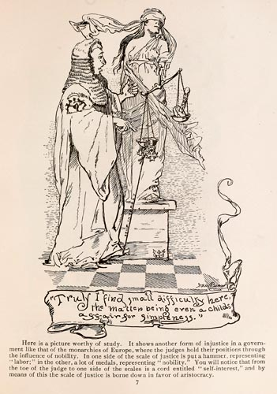

|  |
Here is a picture worthy of study. It shows another form of injustice in a government like that of the monarchies of Europe, where the judges hold their position through the influence of nobility. In one side of the scale of justice is put a hammer, representing "labor;" in the other, a lot of medals, representing "nobility." You will notice that from the toe of the judge to one side of the scales is a cord entitled "self-interest," and by means of this the scale of justice is borne down in favor of aristocracy. |